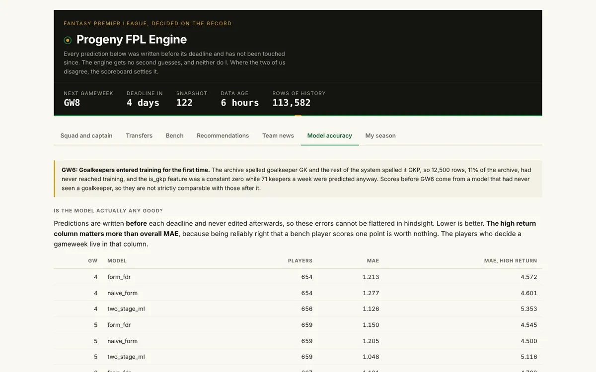

Projects / Case study
Machine learning · CI/CD
FPL Decision Engine: a model that shows where it loses.

- Problem
Fantasy Premier League players pick transfers and a captain every week. You cannot tell whether a model's advice beats your own judgement unless it logs each prediction before the match and scores it after.
- Constraint
No server and no budget. The engine runs as a GitHub Actions job every three hours and publishes static JSON. Predictions are written with
INSERT OR REPLACE, so retraining in the middle of a gameweek would overwrite the predictions you need to grade.- Decisions
- Set a noise floor of 0.17 expected points. Below it the engine says it has no preference and does not rank two players.
- Found on 2026-09-11 that 12,500 goalkeeper rows (11% of the archive) never reached training. Left it unfixed for 11 days, until GW5 was scored and no GW6 predictions existed. Shipped on 2026-09-22.
- Publish a model-change row above the scoreboard whenever a model name changes meaning. Add rows. Never edit them.
- Compare models on identical test rows only. A first run let the keeper fix change the test set and reported 0.912. The corrected figure is 0.905.
- Result
On a held-out 2025-26 season (38 gameweeks, trained on 2022 to 2025), the captain model beats the "captain your most expensive player" baseline by 76 points. The chance of a haul rises from 0.3% to 15.9% across its prediction range, against a 4.1% base rate.
Live, in gameweek 6, the champion scores MAE 1.001 against 1.121 and 1.228. On high-return players it loses: 5.195 against 4.751 and 4.792. Only 3 gameweeks are scored, so this is an early reading.
The held-out result shows the model beats a dumb baseline. It does not show the model beats me. That needs at least 10 paired gameweeks and I have 3.
Sources: DECISION_LOG.md and site/data/accuracy.json in fpl-decision-engine. Reproduce the 76 points with osp-scout/tools/captaincy_diag.py.
- What went wrong
Two verdicts were reversed. Both were real measurements on the wrong sample.
- On 2026-09-09 I rejected opponent-strength features because top-20 ranking fell from 4.39 to 4.27. I had not yet scored a single live gameweek. Once GW4 was scored, the champion showed the worst high-return error, which those features improved. Reopened on 2026-09-19.
- On 2026-10-15 I demoted captaincy after three gameweeks, 28 points behind my own picks. The criterion I wrote beforehand said three could not settle it. I reversed the demotion that night.
- The cron job reported success twice a day while rewriting the same four hand-typed gameweeks. A green step that never did the thing it was named after.
Source: DECISION_LOG.md. Each entry marks whether a script reproduces it.
- Read the ledger
Read DECISION_LOG.md in the repository. Each row names its method, its verdict and whether the verdict was later overturned.